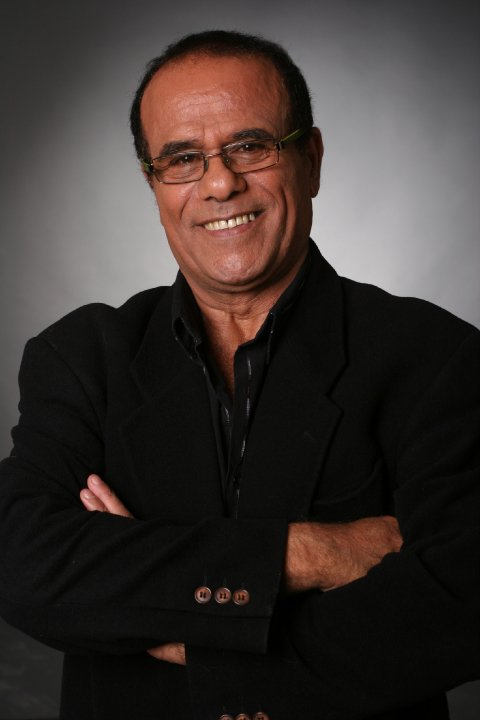

משה הלל ז״ל — הקול שנשאר, המורשת שממשיכה
צנחן, זמר, בעל, אב וסבא אהוב. מקום לחזור אליו, לשמוע את קולו ולשמור את הזיכרונות שלנו.

הקול שנשאר איתנו
שבת עברית נפרדת ממשה הלל
רגע לעצור, להקשיב ולפגוש שוב את הקול האהוב.
ההאזנה נפתחת באתר המקור, לבחירתכם.קולו של משה — הקלטות נדירות
קולות מן הבמה, שירים של שבת ורגעים שנשמרו לאורך השנים.
שעה של זיכרון
״ארבע אחרי הצהריים״ · גלי צה״ל · 08.11.2026
ארבע אחרי הצהריים
ערן אליקים מגיש. בתמלול המצורף תועדה הקדשה מפורשת למשה הלל ב־06:37, לאחר הודעת מהדורת החדשות ב־03:11.
קישור ההאזנה נבדק ונפתח באישור המשפחה. זמני ההקדשה מבוססים על התמלול המצורף; הקרדיט לעריכת הפרק ורשימת ההשמעות עדיין בבדיקה.
נקודות ציון והכרזות מתוך השידור
שידורים ואזכורים נוספים
השירים שנשארו
שירי המחווה, הקלטות וביצועים מן המקורות שנשמרו.
שירים וביצועים נבחרים
ביצועים ומקורות מוזיקליים
מן הבמה אל המסך
פסטיבלים, הופעות והשתתפות בקולנוע.
חיים של יצירה
אבני דרך מתוך העדויות והפרסומים שבארכיון.
זיכרונות והספדים
מקום לסיפורים, לקולות ולרגעים שהמשפחה תבחר לשמור יחד.
- מילים לזכרוסיפורים והספדים
- אלבום משפחתיתמונות וכיתובים
- רגעים מצולמיםסרטונים משפחתיים
- קולות וזיכרונותהקלטות והקדשות
המדור מחכה לזיכרונות שהמשפחה תבחר לשתף.
פתיחת הזיכרונות המשפחתיים
רשומות ומראי מקום
כתבות, מקורות ביוגרפיים, הפצות וקטעי שידור. גרסאות נוספות מוצגות בתוך הרשומה המקושרת.